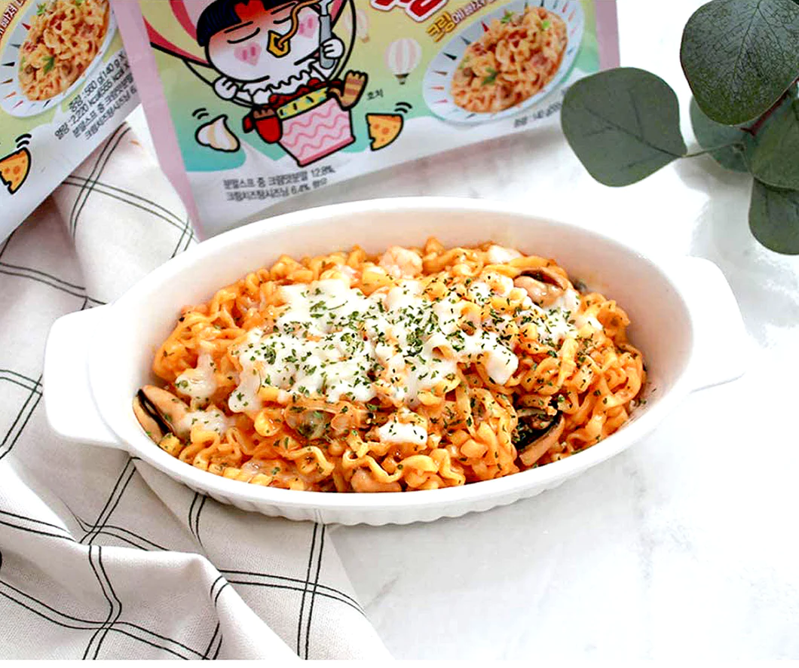
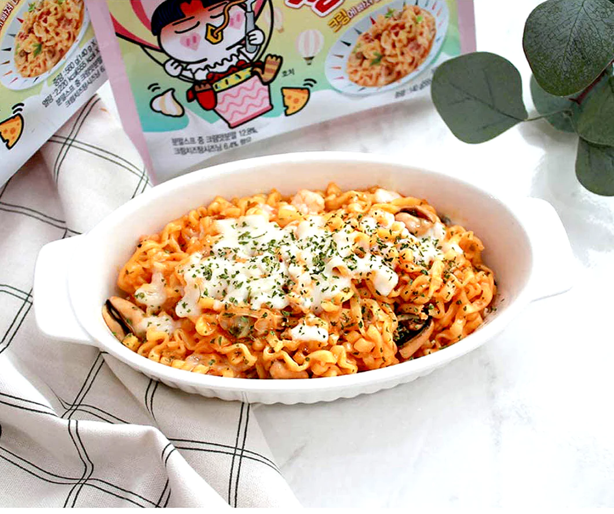

Recipes
Here are some of my favorite recipes!
Chips and Guac

Ingredients:
- Tortilla chips
- 3 ripe avocados
- 1 lime, juiced
- 1/2 teaspoon salt, or to taste
- 1/2 teaspoon cumin
- 1/2 teaspoon cayenne pepper
- 1/2 medium red onion, diced
- 1 small tomato, diced
- 2 tablespoons fresh cilantro, chopped
Instructions:
- Peel and pit the avocados, then mash them in a bowl.
- Add lime juice, salt, cumin, and cayenne pepper to the mashed avocados. Mix well.
- Stir in diced red onion, diced tomato, and chopped cilantro.
- Adjust salt to taste.
- Serve guacamole with your favorite tortilla chips.
Ramen (the packaged kind ü•≤)
 

Ingredients:
- 1 package of instant ramen noodles
- 2 cups of water
- Seasoning packet (included in the ramen package)
Instructions:
- Boil 2 cups of water in a pot.
- Once the water is boiling, add the instant ramen noodles to the pot.
- Cook the noodles according to the package instructions (usually 2-3 minutes).
- While cooking, stir the noodles occasionally to prevent sticking.
- Once the noodles are cooked, remove the pot from heat.
- Using a fork or chopsticks, stir in the seasoning packet provided with the ramen.
- Let the ramen sit for a minute to allow the flavors to blend.
- Serve hot and enjoy your quick and easy packaged ramen!
Roasted carrots with yogurt
For the Carrots:
- 1 ½ pounds medium carrots, halved lengthwise if large and thick
- 2 tablespoons olive oil
- Salt and black pepper
- 1 teaspoon ground coriander
For the Yogurt:
- 1 cup whole milk goat yogurt (or Greek style yogurt)
- ½ cup finely chopped cilantro
- ¼ teaspoon ground coriander
- 1 tablespoon lime juice (about 1/2 lime), plus more for serving
- Pinch of red-pepper flakes
- Pinch of fine sea salt
- ¼ cup roughly chopped roasted, salted peanuts
- 2 tablespoons toasted sesame seeds (optional)
- 3 tablespoons scallions, thinly sliced, green parts only
- Flaky salt, for serving
Preparation:
Heat oven to 400 degrees. In a large bowl, toss the carrots with the olive oil. Season well with salt and pepper, add the coriander, and toss the mixture to evenly coat. Place the carrots on a rimmed baking sheet and roast, flipping about halfway through, until the carrots are golden brown and tender, about 35 to 45 minutes. Allow to cool slightly.
In a medium bowl, combine the yogurt, cilantro, ground coriander, lime juice, and crushed pepper flakes. Stir well to combine and add salt to taste.
Spread the yogurt on the bottom of a plate or platter and arrange roasted carrots on top. Scatter peanuts, sesame seeds, and scallions on top, and finish with flaky salt and a squeeze of lime juice.